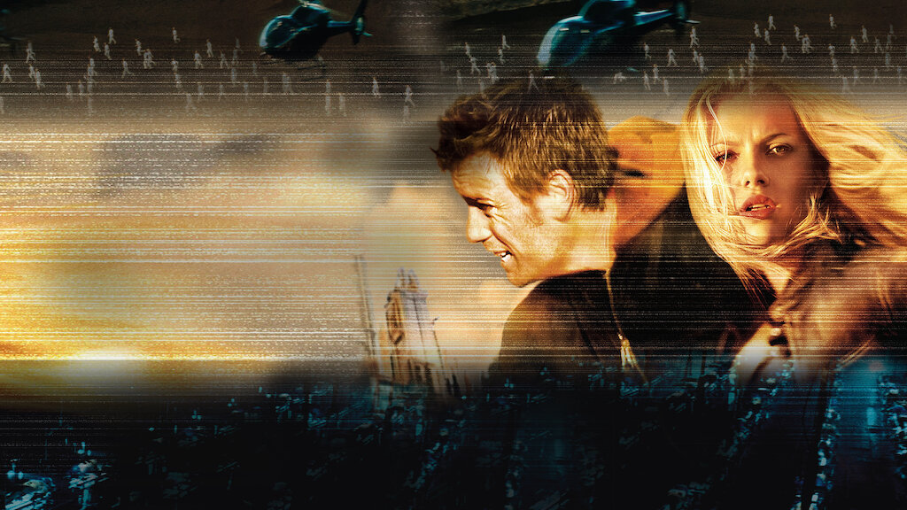

The Island (prt/bra: A Ilha) é um filme americano de 2005, dos gêneros ação, drama e ficção científica, dirigido por Michael Bay, com roteiro de Caspian Tredwell-Owen, Alex Kurtzman e Roberto Orci.
Foi nomeado para o prêmio Saturn de Melhor Filme de Ficção Científica em 2006.
Sinópse

No futuro existe uma entidade utópica baseada na vida do século XX!, que procura recriá-la nos mínimos detalhes. Lincoln Six Echo (Ewan McGregor) vive nesta realidade e, como todos seus residentes, sonha em chegar em um local chamado "a ilha", o único ponto não contaminado do planeta. Após descobrir que todos os habitantes são clones, que possuem a única finalidade de fornecer partes de seu corpo para seres humanos reais, Lincoln decide escapar juntamente com Jordan Two Delta (Scarlett Johansson)..
Bilheteria

O filme foi um semi-fracasso comercial, produzindo cerca de US$162 949 000 em bilheteria em todo o mundo, dos quais US$35.818.000 nos Estados Unidos , com um orçamento de 120 milhões. Na França , fez 1.556.590 admissões.
Crítica
 François Truffaut: Crítico Cinematográfico
François Truffaut: Crítico Cinematográfico
Recebeu uma recepção crítica mista, obtendo 40% de críticas positivas, com uma classificação média de 5,4 / 10 e com base em 200 críticas recolhidas, no site de agregador de críticas Rotten Tomatoes . No Metacritic , ele pontua 50/100 com base em 38 avaliações coletadas.